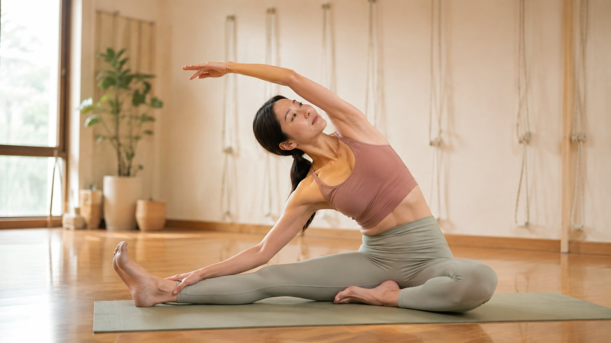

壁繩瑜伽練多久，體態會有感？一份誠實的時間表

「我大概要練多久，圓肩、駝背才會不一樣？」這是很多人在預約前最想問、卻又最難得到誠實答案的問題。有人說一堂就有感，有人說要練半年——其實兩種說法都對，只是在講不同層次的「有感」。這篇我們把時間軸拆開來，讓你在開始之前，先有一份合理、不被誇大的期待。
先分清楚三種「有感」
體態調整的進步不是一條直線，而是分層次發生的。把它拆成三種感受，你會比較不焦慮：
- 當下的放鬆感：一堂課結束時，肩頸鬆一點、呼吸深一點、身體暖起來。
- 動作的順暢感：同一個伸展，這週做起來比上週輕鬆，卡住的地方少了。
- 外觀的改變：照片側面看，肩線、頭的位置真的往回走了一點。
三者需要的時間差很多。愈往下，需要的累積愈久，但也愈接近你真正想要的結果。
第一堂：多半就有「放鬆感」
壁繩的特色是有牆上的繩帶幫你分擔重量，所以即使是第一次、身體很硬，也能被支撐著把胸口打開、把緊繃的地方伸展到。大多數人下課時會覺得肩頸鬆了、站起來輕一點。但要提醒：這是「循環變好、肌肉暫時放鬆」的感覺，很真實，卻還不是結構性的改變——就像按摩完會舒服，但那不等於問題解決了。
第一堂的舒服，是身體「被鬆到」的訊號，不是「已經改好」的證明。把它當成一個好的起點，而不是終點，你就不會在第三週覺得「怎麼又緊回來」而灰心。
約 3～6 週：動作開始變順
如果維持每週規律練習，多數人在一個多月內會感覺到「動作變順」：以前抬不太起來的手、開不太了的胸口、僵硬的下背，開始有一點鬆動的空間。這個階段，過緊的肌肉被慢慢放長、過弱的肌肉開始被叫得動，是身體在重新學習分工。外觀還不會有戲劇性變化，但你自己會先感覺到。
約 2～3 個月：外觀與習慣開始改變
結構性的體態改變，通常要到兩三個月、累積一定的練習量之後，才會在照片和旁人眼中看得出來。原因很簡單：造成圓肩駝背的，是你日積月累的用力習慣；要改回來，也需要新的習慣被練到「不用刻意想」。這也是為什麼我們常說——體態調整拚的不是強度，是持續。
影響快慢的三個變數
同樣練三個月，每個人的進度不一樣，主要差在這幾點：
- 練習頻率：一週一次和一週兩三次，累積速度差很多。頻率比單次強度更關鍵。
- 下課後的生活：如果一天還是坐 8 小時、低頭滑手機，等於一邊練一邊拉回去。課堂外的習慣，決定了進度會不會被抵銷。
- 起點的狀況：失衡愈久、愈明顯，需要的時間自然愈長。這也是為什麼先做檢測、看清楚起點很重要。
如果你還不確定壁繩到底怎麼練、第一堂會做什麼，可以先看這篇：壁繩到底是什麼？第一次上課會做什麼？
本文為體態與姿勢的一般衛教與練習分享，非醫療診斷或治療。每個人的進度因人而異，若有疼痛、舊傷或特殊病史，請先諮詢合格醫療專業人員。